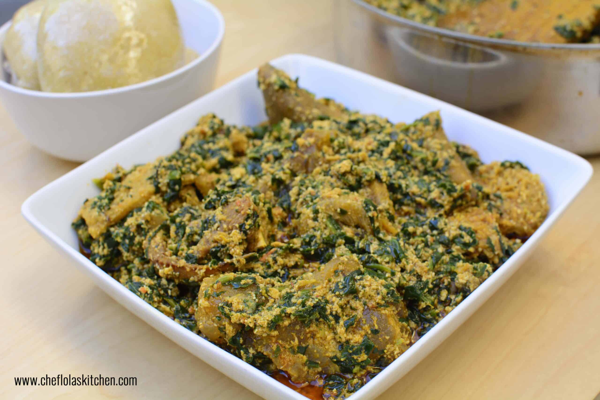

Egusi soup preparation

EGUSI SOUP RECIPE
Egusi is one of the mainy nigeria deliceies.
it is made from freishly grown naturalingridents.
Ingridents
- egusi(melon)seed
- meat
- stoke fish
- dry fish
- palm oil
- onion
- peper
- crayfish
- meat stock
- seasoning
- bitterleaf
- salt
steps to follow
- prepare your Ingridents
- steam the fish and meat
- blend the peper
- prepare egusiplate
- heat palmoil
- fry the egusi
- add peper
- add stock
- add meat and fish
- add water to adjust tickness to your taste
- add seasoning
- add vegatibles
- allow to cook
- serve
Home